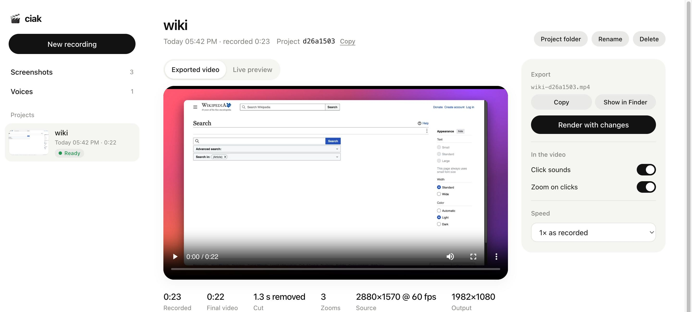

Record your screen. Then just ask, in plain words, and your agent edits it: cuts, zooms, captions, speed, even narration in your own voice. You never touch a timeline.
The voice in this video isn't a recording. An agent made it from a short sample of my real voice, then wrote, recorded and edited the whole video with ciak.
Three steps, and only the first and last are yours.
Press ⌘2 and pick an area or a window. Or let your agent record itself in a browser, with your logins.
Pauses are cut and every click gets a zoom on its own. Ask for anything else, and the agent does it and renders the video.
The video plays in the panel. Flip a switch and see it change at once. Copy it straight into a chat.
Anything you'd do in a video editor, you can ask for. Nothing technical.
Your recordings, your screenshots and your voices, in one quiet window.

Every recording plays here. Switch zooms or click sounds off, change the speed, and watch it change right away.
Free and open source, for Macs with Apple silicon.
git clone https://github.com/nicoloboschi/ciak cd ciak && npm install ./ciak install